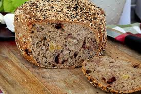
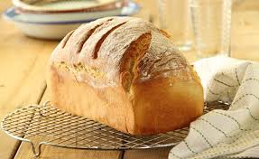

לחמים
חלה
מאז ומתמיד חלה טרייה לקראת בוא השבת עושה לי התרגשויות בלב..

לחם כוסמין
לחם כוסמין מדהים שאפשר להכין גם כלחמניות בגרסה 100 % קמח ...
לחם זיתים
מתכון פשוט וקל ללחם זיתים מדהים עם פנים רך ואוורירי ועם קראסט פריך ומתפצפץ...

לחם לבן
לחם לבן מושלם לכריכים המתבסס על 6 מרכיבים בסייסים בלבד!
לחמניות שום
לחמניות שום רכות וטעימות , התמכרות מובטחת
לחם קמח מלא
לחם פשוט מקמח מלא. אפשר להוסיף כל מה שמתחשק לכם - אגוזים,גרעינים,עשיבי טיבול
פיתות
פיתות ביתיות להכנה פשוטה בבית, חצי שעה ויש לכם פיתות נהדרות!
פרנה
לחם פרנה מרוקאי, אוורירי..כל ביס תענוג!

לחם שיפון
לחם שיפון מלא בריאות בזכות קמח השיפון המלא שבו וקל במיוחד להכנה